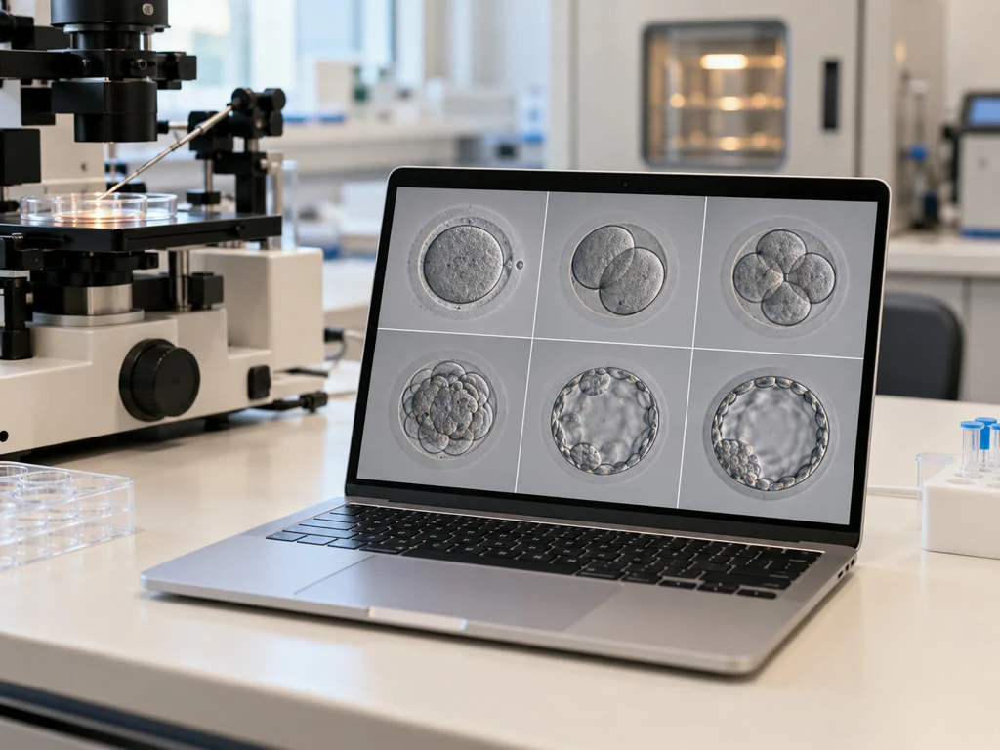
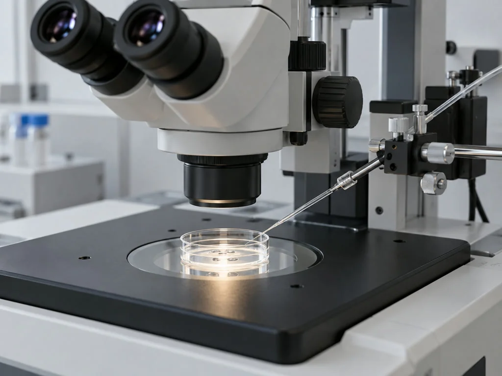

난임 클리닉
검사 소견을 확인한 뒤 다음 진료 시기를 정합니다.
3회까지 인공수정을
2~3개월 동안 검토하며
다음 치료 시점을 상의합니다.
인공수정을 몇 차례 시도할지와 각 시술 사이의 간격은 검사 소견을 바탕으로 정하며,
누비아는 매 주기 난소의 반응과 몸 상태를 살펴
연속 시도 여부와 다른 치료로 바꿀 시점을 상의합니다.
세 단계에 걸친 개인별 진료계획을
설계합니다.
인공수정
몸 상태에 따라 주기와 간격 조율
시험관아기
과배란 → 채취 → 배양 → 이식
특화 치료
배아 염색체 · 세포 기능 · 남성 요인 검토
[ STEP 01 ]
난소의 반응을 확인하며
배란 시기에 맞춰 준비하는 인공 수정
적은 수의 난포가 자라도록 난소 반응을 관찰하며,
진료 결과에 따라 다음 방법을 검토합니다.
배란 일정에 맞게 준비한 정자를
자궁 안에
넣는 시술입니다.
부담 적은 자극
난포 수를 살피며 자극 강도를 조절하고 다태임신 가능성을 설명합니다.
빠른 치료 설계
몸 상태가 허용하는지 확인한 뒤 연속 시도 여부와 평가할 주기를 정합니다.
지체 없는 전환
여러 차례 시도해도 임신되지 않으면 시험관아기로 전환할지 상의합니다.

[ STEP 02 ]
시험관 시술이 진행되는 다섯 단계
진료를 시작하기 전 해당 단계에서 할 일을 안내드리고,
검사 소견에 맞춰 진행할 항목을 정합니다.
과배란유도
2~4주 소요
난소 자극 후 난포의 성장을 확인합니다
검사 결과와 이전 주기의 반응을 참고해 장기 또는 단기 자극 방법을 정합니다
채취
20~30분
성숙 상태를 살펴 난자를 얻습니다
마취 후 질식 초음파를 보며 난자를 채취하고 정자 준비 날짜도 조율합니다
배양
3~5일
몸 밖에서 난자와 정자를 수정한 뒤 배아의 발달을 관찰합니다
배양 공간을 구분해 사용하고 배아가 분열하는 양상을 기록합니다
이식
2~3분 소요
관찰한 발달 상태를 검토해 선택한 배아를 자궁 안으로 옮깁니다
대개 마취 없이 진행하며 이식 후 몸 상태를 확인하고 귀가를 안내합니다
황체기보강
지속
착상 준비를 위해 필요한 호르몬을 투여합니다
황체호르몬 사용 기간은 임신 초기 경과를 보며 담당의가 정합니다
[ STEP 03 ]
배아의 발달 과정을
살피는 검사와 배양 장치
배아의 발달 양상과 염색체 상태 등,
현재 치료에서 더 확인할 부분이 있는지 살피고 필요한 방법을 상의합니다.

발달 영상과 형태를 함께 평가
시간에 따른 분열 속도와 세포의 모양을 비교해 배아 평가에 필요한 정보를 정리합니다.
분석 자료를 통한 착상 가능성 검토
영상 분석 결과만으로 이식을 결정하지 않으며 배양 기록과 환자의 치료 이력을 의료진이 함께 검토합니다.
여러 배아의 발달 양상을 비교하고 이식 순서를 정하기 위한 참고 자료가 필요한 경우
반복 실패와 관련한 소견 확인
반복된 유산이나 착상 실패에서 검사가 도움이 될 부분과 한계를 상담합니다.
배아 손상을 줄이기 위한 관리
배아가 포배기에 도달하면 일부 세포를 채취해 검사합니다.
이전 유산과 이식 결과, 연령 및 유전 관련 이력을 검토할 필요가 있는 경우
난자 질 개선
전반적인 건강 상태와 생활 요인을 살펴 난자에 영향을 줄 수 있는 부분을 검토합니다.
진료와 생활 요인을 함께 점검
채취 일정에 맞춰 식사와 활동에 관한 생활 상담도 진행합니다.
난소 반응이 낮거나 체외수정이 반복해서 어렵고 채취 수가 줄어든 경우
임신 가능성 확대
정자를 확보할 수 있는 방법이 있는지 함께 검토합니다.
결과를 확인하며 정하는 진료 순서
검사에서 확인한 요인에 따라 치료와 생활 관리 중 필요한 부분을 나눠 설명합니다.
정자가 없거나 적다는 검사 결과를 받은 경우
기증 정자 사용을 검토한다면 정자 기증 안내에서 대상 조건과 진행 순서를 먼저 확인해 주세요.
검체 정보를 확인하는
단계별 검체 관리 과정
배아를 다룰 때에는 검체 확인이 필요합니다.
식별 태그의 무선 정보를 비교하는 장치로 담당자의 확인 절차를 보조하고
단계마다 검체와 환자 정보가 일치하는지 살핍니다.
무선 식별 태그의 정보 대조
용기에 부착한 식별 태그에서 환자별 정보를 읽어
서로 다른 검체가 함께 놓일 때 알림을 보내도록 합니다.
진행 단계마다 이어지는 검체 기록
난자를 얻은 때부터 수정과 배양을 거쳐 이식하기까지
각 작업의 검체 정보를 대조하고 진행 이력을 남깁니다.
담당자 확인에 전자 알림 추가
담당자가 직접 확인하는 절차에 전자 식별 장치의
대조 결과를 더해 검체 혼선 위험을 줄입니다.
검체별 처리 이력의 확인과 보관
두 사람의 식별 정보에 수정과 배양, 이식 때 작성한 기록을
연결하여 필요할 때 담당자가 처리 이력을 확인합니다.
누비아 난임클리닉의 진료 과정
검사 소견에 맞춰 정하는 진료 순서
검사에서 확인한 상태와 방문 부담 등을 함께 고려해
지금 진행할 진료의 범위와 순서를 상의합니다.
안전한 배아 관리
무선 태그의 정보와 담당자의 확인을 함께 사용해
배아 및 생식세포 검체를 단계마다 구분합니다.

배아 관찰과 선별을 돕는 장비
배아의 발달 영상에서 얻은 AI 분석 자료를 참고해
이식할 배아에 관한 의료진의 평가를 보조합니다.
난임 클리닉,
누비아에서 답해드립니다
인공수정부터 시작하는 경우는 언제인가요?
인공수정과 시험관아기 중 어떤 방법을 먼저 할지는 부부의 검사 결과에 따라 다릅니다. 난관이 막혀 있는 경우처럼 시험관 치료를 검토하는 이유를 담당 원장이 설명합니다.
이전에 치료받은 기록도 검토할 수 있나요?
이전 시술의 자극 방법과 배양 결과, 이식 기록이 있으면 가져와 주세요. 어떤 과정에서 어려움이 있었는지 검토하고 추가 검사나 다른 방법이 필요한지 상의합니다.
추가 검사나 치료 비용은 어떻게 확인하나요?
추가 검사나 처치에 따른 비용이 생길 수 있습니다. 시행 여부를 정하기 전에 해당 항목과 예상 비용을 확인해 드립니다.
검체는 어떤 절차로 확인하나요?
전자 매칭 장치가 검체 태그의 정보를 비교하고 담당자도 단계별로 확인합니다. 각 처리 과정은 기록으로 남깁니다.
치료 방법을 바꾸면 검사도 다시 해야 하나요?
기존 진료와 검사 기록을 참고해 다음 단계를 상의합니다. 결과의 유효기간이나 달라진 상태에 따라 일부 검사가 다시 필요할 수 있습니다.